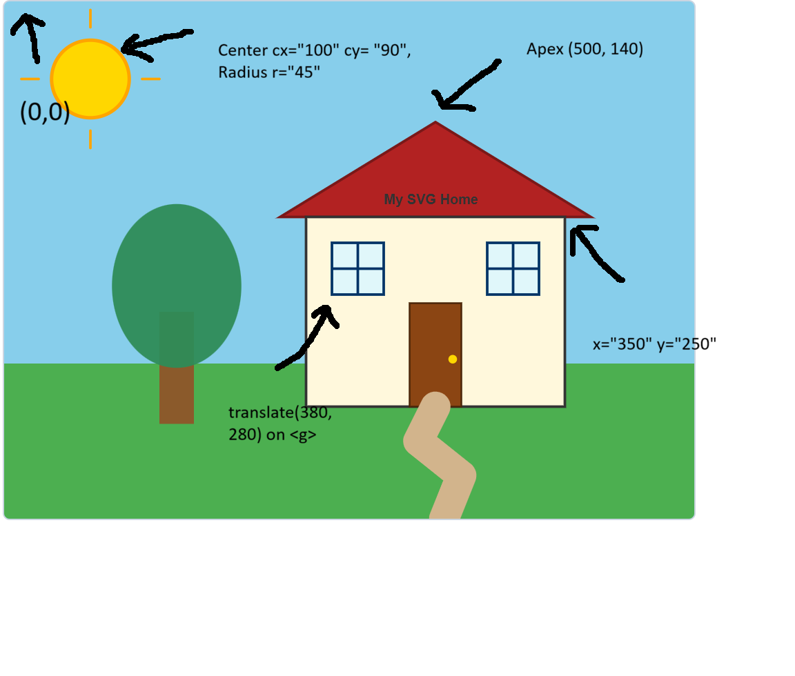

This page demonstrates building an interactive graphical scene using native Scalable Vector Graphics (SVG) elements, grouping primitives, and working with the SVG Cartesian coordinate space.
In SVG, coordinates start at (0, 0) in the top-left corner. The table below correlates the code attributes with the exact graphical elements rendered above:
| Primitive | Code Example | Coordinate Interpretation |
|---|---|---|
<rect> |
x="350" y="250" width="300" height="220" |
Starts 350px from left and 250px from top, extending 300px wide and 220px downward. |
<circle> |
cx="100" cy="90" r="45" |
The circle center is fixed at (100, 90) with a radial span of 45px. |
<polygon> |
points="320,250 500,140 680,250" |
Creates the triangular roof connecting the left eaves (320, 250), apex (500, 140), and right eaves (680, 250). |
<ellipse> |
cx="200" cy="330" rx="75" ry="95" |
Center of tree canopy at (200, 330) with an X-radius of 75px and a vertical Y-radius of 95px. |
<line> |
x1="100" y1="30" x2="100" y2="10" |
Renders a direct ray line starting at (100, 30) and running straight up to (100, 10). |
<polyline> |
points="500,470 480,510 530,550 510,600" |
Defines a sequence of connected road vertices running from the door threshold down to the bottom border. |
<g> |
transform="translate(380, 280)" |
Shifts the local coordinate origin for the enclosed shapes 380px right and 280px down. |
Annotated diagram verifying element placement across the $800 \times 600$ viewport:
